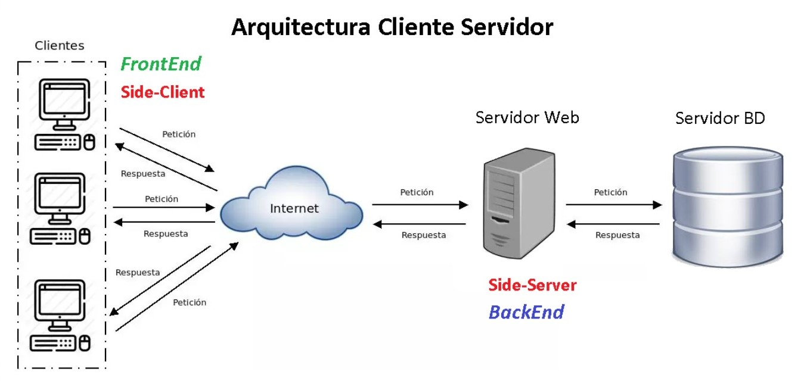
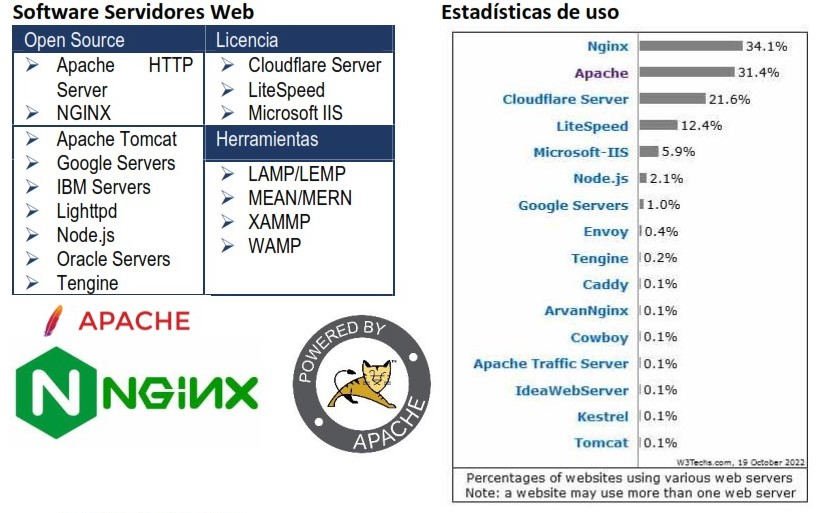
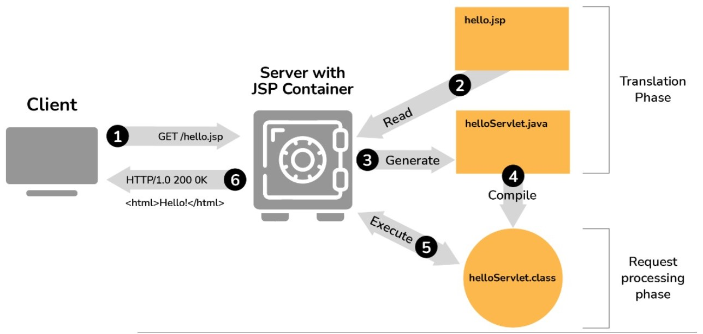

Objetivos de Aprendizaje
- Comprender las diferentes arquitecturas de aplicaciones web modernas
- Dominar la configuración y administración de servidores web Apache Tomcat
- Aplicar los principios de Spring Framework para desarrollo empresarial
- Implementar aplicaciones web dinámicas utilizando JSP y el patrón MVC
- Configurar entornos de desarrollo completos
- Implementar sistemas de autenticación basados en tokens
Tecnologías Utilizadas
- Java
- Apache Tomcat
- Apache HTTP Server
- OpenJDK
- Cloud Hosting
- Servicios DNS
- JWT (Jason Web Token)

¿Que se hizo?
1. Fundamentos de Arquitectura Web
- Arquitecturas Cliente-Servidor: Evolución desde aplicaciones multipágina hasta SPAs y arquitecturas híbridas
- Web: Análisis de diferentes tipos de hosting y cloud computing
- Configuración de Servidores: Apache HTTP Server y Apache Tomcat, parámetros esenciales y archivos de configuración

2. Herramientas de Desarrollo
- Apache Tomcat: Instalación, configuración y estructura de directorios del contenedor de servlets
- Maven: Gestión de dependencias, ciclo de vida del proyecto y archivo pom.xml
- Entornos de Desarrollo: Integración con IDEs como IntelliJ IDEA

3. Desarrollo con JSP
- JavaServer Pages: Sintaxis, scriptlets, declaraciones y expresiones
- Objetos implícitos: Request, response, session, application y otros objetos del contexto JSP
- Patrón MVC: Implementación de la arquitectura Modelo-Vista-Controlador

Conclusión
Esta semana me ha proporcionado una introducción clave en el desarrollo de aplicaciones backend modernas. La progresión desde conceptos arquitectónicos fundamentales hasta la implementación práctica con Spring Framework ha sido especialmente valiosa.
Reflexión
La arquitectura MVC y el uso de JSP demostraron cómo separar lógica y presentación para crear aplicaciones escalables. Como reflexión, dominar estas herramientas y conceptos es esencial para construir soluciones robustas y eficientes en el mundo del desarrollo web.
Recursos Utilizados
- Arquitectura web back-end - CodeAcademy
- Backend - AWX
- Desarrollo del Backend - Material presentado por el Ing. Jaime Suasnabar Terrel
- Usando Java Spring - Material presentado por el Ing. Jaime Suasnabar Terrel